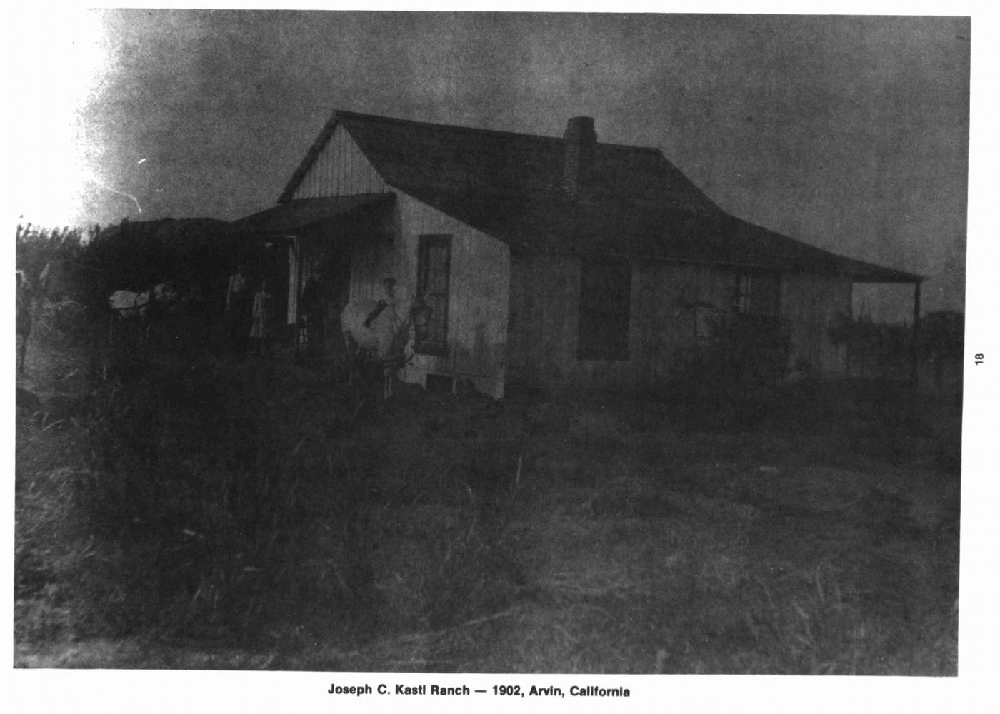

The book · The Family of Peter Kastl
Page 18 Joseph C. Kastl Ranch — 1902, Arvin, California


Transcription

Transcriber’s notes
Full-page landscape photo; the scan shows the page rotated so the page number '18' is printed sideways at the right edge. Caption printed below the photo.